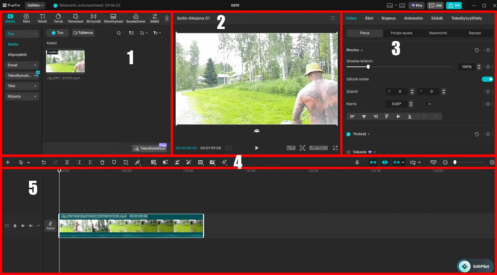
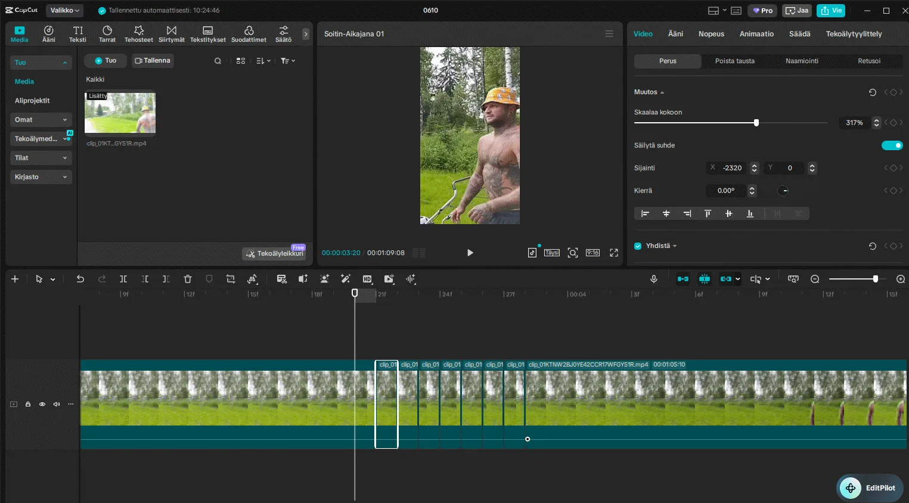
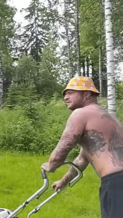

Lyhyesti
- CapCutin ilmaisversio riittää ammattimaiseen lyhytvideoiden editointiin.
- Käyt läpi koko prosessin: projekti, ääniraita, kuvasuhde 9:16, sulava liike frame kerrallaan ja vienti.
- Huono ääni karkottaa katsojan nopeammin kuin huono kuva. Korjaa ääni aina ensin.
- Taidosta tulee tulonlähde editointipalvelulla, erikoistumalla tai myymällä valmiita pohjia.
- Kehityt vain tekemällä: sata videota tekee sinusta hyvän, kaksituhatta paremman kuin muut.
CapCut on yksi helpoimmista työkaluista, joilla kuka tahansa voi editoida videoita kuin ammattilainen. Et tarvitse PRO-versiota. Riittää, että sinulla on tietokone, jolla editoida.
Tässä oppaassa käyn läpi, miten editoit KICK-suoratoistopalvelun leikkeen TikTok-muotoon.
Valitsin esimerkiksi OGUMTV:n leikkeen, jossa hän leikkaa nurmikkoa. Se on tavallista haastavampi muuttaa vaakamuotoisesta 16:9-kuvasuhteesta pystymuotoiseen 9:16-kuvasuhteeseen, jota TikTok, Instagram Reels ja YouTube Shorts käyttävät. Oppaan tarkoitus on näyttää, miten editoit videoita kuin ammattilainen. Lopuksi kerron, miten taidosta tehdään oikea tulonlähde.
Huomio: Jos aiot julkaista toisen tekijän KICK-leikkeen, tarvitset aina luvan. Tätä esimerkkivideota ei julkaista eikä viimeistellä, vaan sitä käytetään vain opetustarkoituksessa.
Luo projekti ja tutustu näkymään
Aloita CapCutissa uusi projekti ja tuo siihen video, jota haluat editoida. Tutustu tässä vaiheessa rauhassa kaikkiin näkymän ominaisuuksiin, koska sinun on ymmärrettävä, miten editointi tapahtuu.
Kuvassa näkymän alueet on numeroitu:
- projektin tiedostot
- videon esikatselu
- videon säädöt
- editointityökalut
- editointialue eli aikajana.
Muista nämä nimet, sillä käytän niitä jatkossa, kun kerron, mitä missäkin tehdään.

Ennen kuin aloitat editoinnin, katso lähdevideo kerran kokonaan. Näet, millaista materiaalia sinulla on, mitkä hetket kiinnostavat katsojaa eniten ja mistä kohdista leikkaukset kannattaa tehdä. Hyvä editoija suunnittelee ennen kuin leikkaa. Huono editoija leikkaa ensin ja miettii sitten. Tee se oikein alusta asti.
Ääniraita kuntoon
Suurenna leikettä editointialueella, jotta näet ääniraidan. Se näkyy leikkeen alapuolella palkkeina. Voit laajentaa osiota alueen vasemmasta reunasta, jossa on numero.
Laske äänenvoimakkuutta niin paljon, ettei yhtään punaista aluetta näy. Punainen tarkoittaa liian kovaa ääntä, ja se kuulostaa valmiissa videossa pahalta.
Aloittelijan yleisin äänivirhe on jättää ääni liian kovalle tai liian hiljaiselle. Katsojan kokemus kärsii siitä enemmän kuin mistään visuaalisesta virheestä. Ihminen sietää huonoa kuvaa paljon helpommin kuin huonoa ääntä. Siksi ääniraita on aina ensimmäinen asia, johon kiinnität huomiota.
Kun ääni on kunnossa, pidä CTRL-näppäin pohjassa ja pyöritä hiiren rullaa, jotta aikajana tarkentuu. Tässä videossa OGUM liikkuu, joten joudumme muokkaamaan melkein jokaista ruutua eli framea. Se tekee editoinnista haastavamman – ja juuri siksi opit enemmän.
Vaihda kuvasuhde
Siirry esikatselualueelle. Huomaatko kohdan ”Kuvasuhde”? Klikkaa sitä ja valitse 9:16.
Nyt 16:9-video näyttää hölmöltä. Älä hätäile. Video pitää suurentaa täyttämään ruutu ja siirtää niin, että henkilö näkyy. Käymme tämän tarkemmin läpi editointivaiheessa. Nyt laitetaan vasta pohja kuntoon, jotta editointi pääsee alkamaan.
Miksi 9:16 on niin tärkeä? TikTok, Instagram Reels ja YouTube Shorts ovat kaikki pystymuotoisia, koska ihmiset pitävät puhelinta pystyssä. Jos julkaiset niissä vaakavideon, se ei täytä ruutua, ja katsoja selaa ohi saman tien. Kuvasuhde vaikuttaa suoraan siihen, kuinka moni katsoo videon loppuun.
Varsinainen editointi: pilko leike osiin
Olemme nyt zoomanneet aikajanan niin tarkaksi, että näemme videon ruutu kerrallaan. Hyvässä editoinnissa kuva ei nyi, vaikka henkilö liikkuu. Siksi pääleikettä siirretään frame kerrallaan pienin askelin.
Tähän tarvitset editointityökalujen ”Pilko”-toimintoa. Liikuta aikajanan vaaleaa palkkia ja seuraa henkilön liikettä. Näin näet, mistä kohdista leike pitää pilkkoa osiin, jotta voit alkaa seurata henkilöä. Koska vaakakuva muutetaan pystykuvaksi, liikkumatilaa on runsaasti.

Kuvassa olen jo aloittanut leikkaamisen. Sinun ei välttämättä tarvitse edetä yhtä tarkasti frame kerrallaan. Näytän, miten itse teen, mutta jotkut leikkaavat saman isommissa osissa.
Videon säädöt -alueella voit muuttaa videon sijaintia X-akselilla (vaakasuunta) ja Y-akselilla (pystysuunta). Huomaa, että aiemmin videon X-sijainti oli -2346, mutta pilkkomassani leikkeessä se on -2320. Tällä arvolla videota liikutetaan vaakatasossa vasemmalle tai oikealle.

Yllä olevassa gifissä etenin frame kerrallaan ja siirsin videota vasemmalle ilman nykimistä. Katso taustan koivua, niin huomaat, kuinka sulavasti kuva liikkuu.
Nyrkkisääntö: 20–50 pikselin siirrot frame kerrallaan näyttävät sulavilta. Jos siirrät sekunnin mittaisia pätkiä kerralla, video alkaa nykiä ja näyttää amatöörin työltä.
Videon vienti eli renderöinti
Kun video on editoitu, se pitää viedä ulos. PRO-versiota et tarvitse. Musiikkia ei myöskään kannata lisätä CapCutissa. Editoi video sovelluksessa, siirrä se puhelimeesi ja lataa se sieltä haluamallesi somealustalle.
Jako menee näin:
- CapCutissa: kaikki tekstit, kuvat ja muut visuaaliset elementit.
- Puhelimella julkaisuvaiheessa: ääniraita, videon otsikko ja hashtagit.
Näin videollasi on parempi mahdollisuus nousta trendaamaan.
Valitse renderöinnissä korkein laatu, jonka CapCutin ilmaisversio tarjoaa. Älä tyydy pienempään resoluutioon. TikTokin kaltaiset alustat pakkaavat videon uudelleen, ja valmiiksi heikkolaatuinen video näyttää julkaisun jälkeen todella huonolta.
Miten kehityt editoijana?

Tämä oli lyhyt ja nopea opas videoiden editointiin. Muutama asia vaikuttaa ratkaisevasti siihen, katsooko katsoja videon loppuun:
- Kasvot keskelle. Pidä ihmisen kasvot mahdollisimman keskellä kuvaa.
- Tekstitys suun lähelle. Jos käytät tekstitystä, sijoita se lähelle suuta, leuan alapuolelle.
- Alku ratkaisee. TikTokissa sinulla on vain muutama sekunti aikaa koukuttaa katsoja. Ensimmäinen kuva ja ensimmäinen ääni ratkaisevat, selaako hän ohi vai jääkö katsomaan.
Toistan itseäni, kuten täällä olen monesti tehnyt: videoeditoinnissa ratkaisee toistojen määrä. Kukaan ei synny maailman parhaaksi editoijaksi. Sinun pitää epäonnistua monta kertaa, jotta voit onnistua.
Sinusta tulee hyvä, kun olet editoinut ensimmäiset sata videota. Sinusta tulee muita parempi, kun olet editoinut yli 2 000 videota. Vain tekemällä opit ja taitosi kehittyy. Voit harjoitella aluksi KICK-leikkeillä, mutta muista kysyä lupa ennen julkaisua.
Miten muutat videoeditointitaidon rahaksi
Tähän kohtaan moni haluaa päästä, mutta harva kertoo konkreettisesti, miten se oikeasti tapahtuu. Videoeditoinnille on todellista kysyntää, ja kysyntä kasvaa koko ajan. Sisällöntuottajia on enemmän kuin koskaan, mutta harva heistä osaa tai haluaa editoida itse.
1. Tarjoa editointipalvelua suoraan sisällöntuottajille
Tämä on ensimmäinen ja nopein tapa. Mene TikTokiin tai Instagramiin ja etsi pieniä tai keskisuuria tilejä, joilla on hyvää sisältöä mutta huono editointi. Ota yhteyttä suoraan ja tarjoa palveluasi.
Aloita edullisella hinnalla, jotta saat ensimmäiset referenssit. Yksikin tyytyväinen asiakas, joka suosittelee sinua eteenpäin, voi avata oven useampaan asiakkuuteen. Lue myös, miten hankit ensimmäisen asiakkaan ilman verkostoa.
2. Erikoistu yhteen nicheen
Jos editoit esimerkiksi pelivideoita, urheilusisältöä tai yrittäjäsisältöä, sinusta tulee se tekijä, jonka puoleen alan sisällöntuottajat kääntyvät tarvitessaan editoijaa. Erikoistuminen tarkoittaa kilpailua pienemmällä areenalla. Siellä on helpompi erottua kuin editoijien yleisillä markkinoilla.
3. Myy valmiita pohjia
Voit myydä editoituja leikkeitä tai template-paketteja eli valmiita pohjia, joita muut voivat ostaa ja käyttää omissa videoissaan. Tämä tapa voi skaalautua, koska teet työn kerran ja myyt sen monelle.
Yhteinen nimittäjä: näyttösalkku
Kaikkia kolmea yhdistää sama 2 000 videon harjoittelu. Kun olet editoinut tarpeeksi, sinulla on näyttösalkku, jolla osoitat taitosi ja hinnoittelet itsesi sen mukaan. Editoija, jolla on näyttösalkku, voi pyytää selvästi parempaa hintaa kuin editoija ilman sitä. Hyvä näyttösalkku myy paremmin kuin mikään mainos, jonka voisit itsestäsi tehdä.
Kun laskutus alkaa, muista, että tulot ovat veronalaisia. Pienen sivutoimen voi aloittaa esimerkiksi kevytyrittäjänä tai toiminimellä.
Mitä teet tänään
- Lataa CapCut ja avaa uusi projekti.
- Editoi yksi vaakavideo pystymuotoon: ääni kuntoon, kuvasuhde 9:16 ja sulava seuranta.
- Aloita laskuri. Tämä oli video numero yksi. Tavoite on sata.